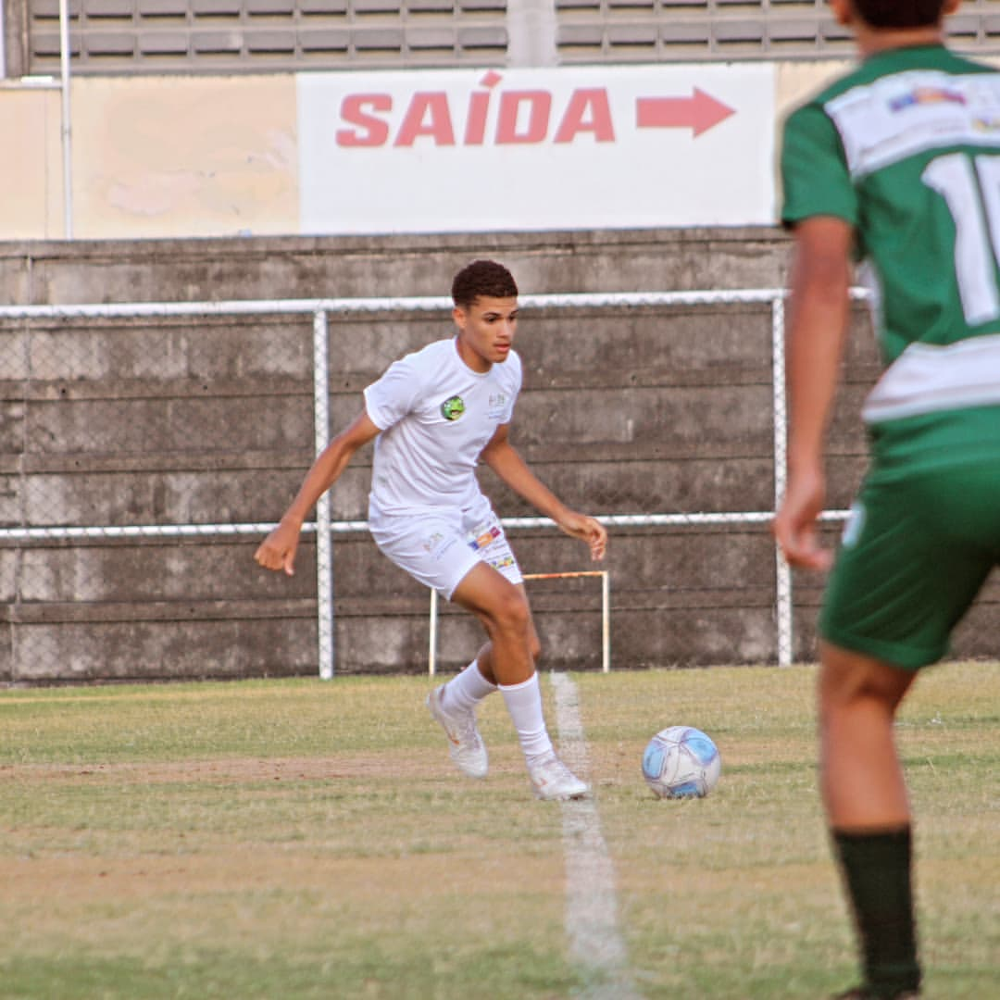
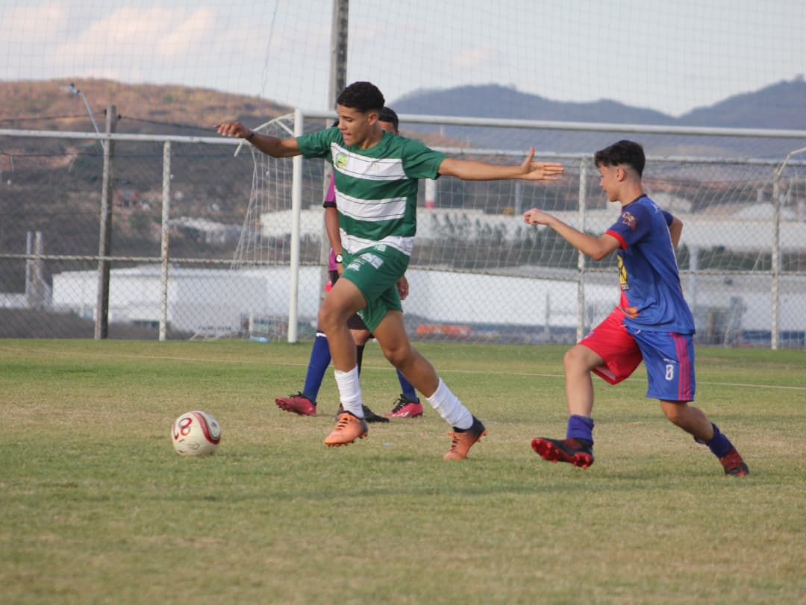
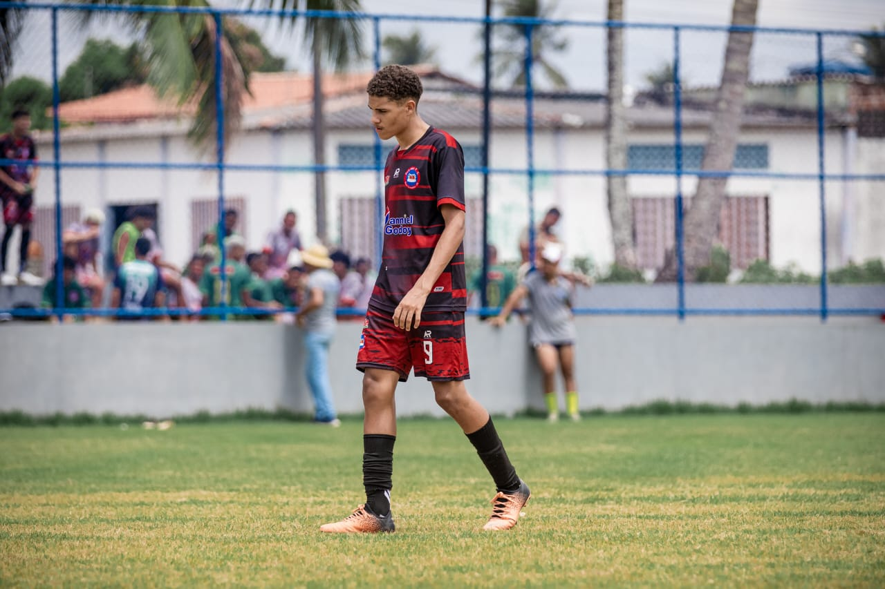
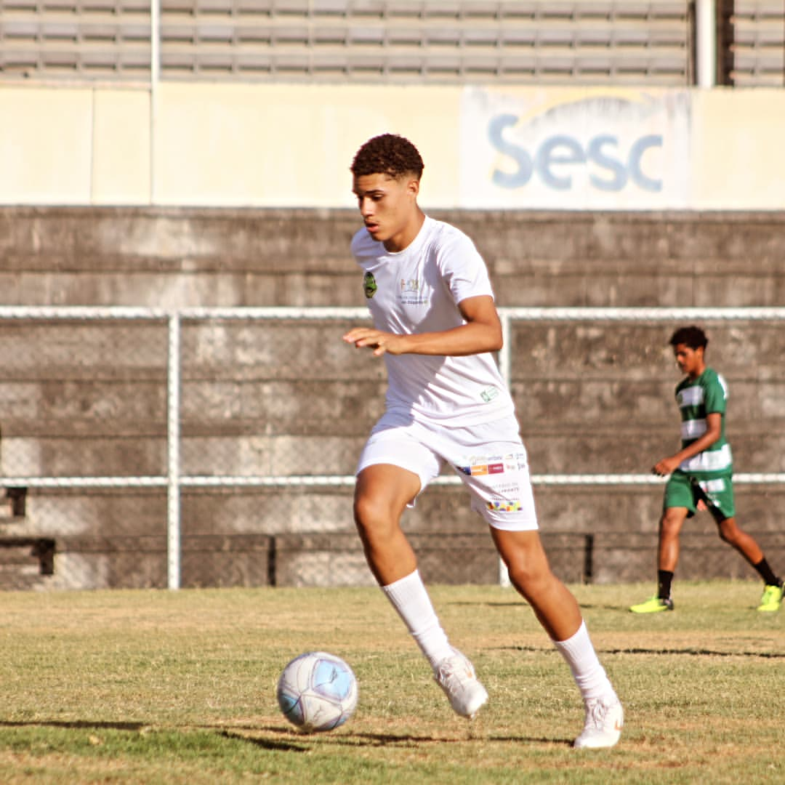

Informações Pessoais

Nome: Iury Gabriel
Idade: 14 anos (2010)
Cidade natal: Bom Conselho - PE
Estatura: 180cm e 71kg
Meus Sonhos

- Defender a Seleção Brasileira
- Ser um ícone do esporte e inspirar jovens
- Montar uma academia para jovens talentos
Clubes pelos quais passei

- Flamengo de Arcoverde - PE
- Belo Jardim FC - PE
- Clube atual: [Nome do clube]
Outras Informações

Sempre fui apaixonado pelo futebol desde pequeno, me dedicando para alcançar grandes conquistas. Com um espírito competitivo, sempre busquei superar meus limites, enfrentando desafios com determinação e foco. O futebol é mais do que um esporte para mim, é um estilo de vida.